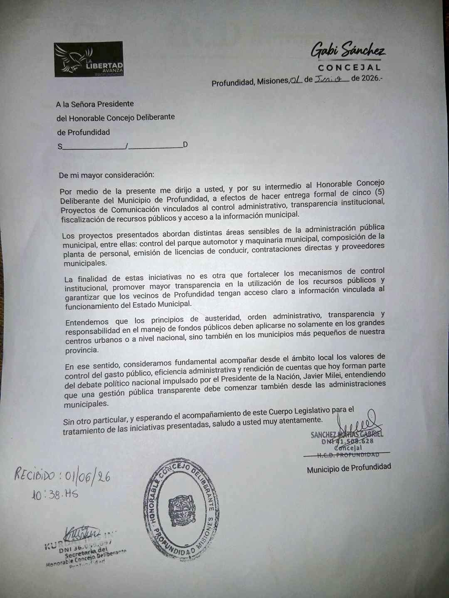
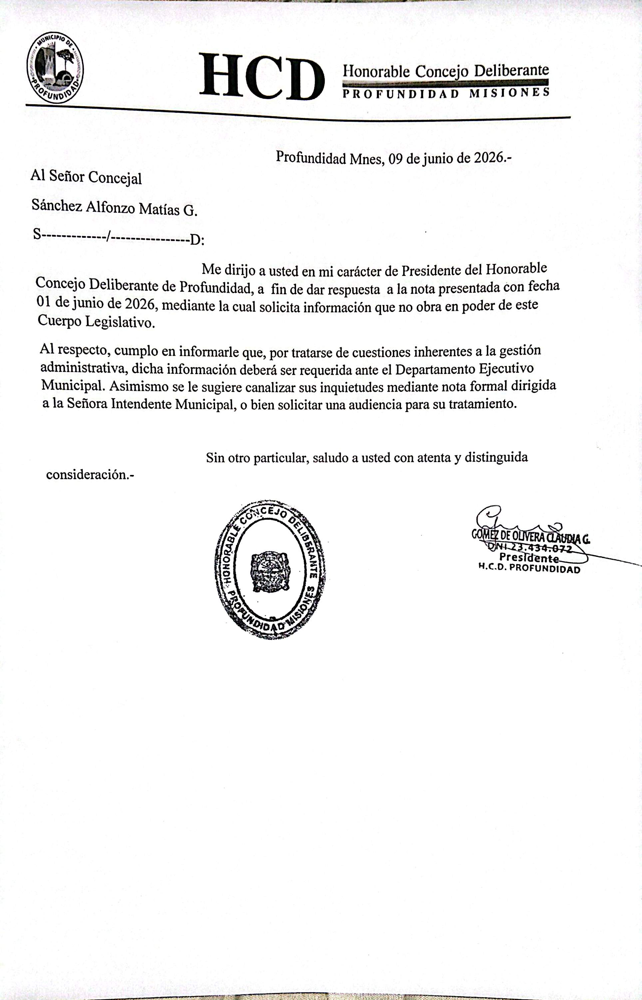

Registro en el Acta N° 669
En la sesión ordinaria del Honorable Concejo Deliberante correspondiente al 9 de junio de 2026, se dejó constancia en el Acta N° 669 de la presentación de cinco proyectos de comunicación y de la recepción de una respuesta formal por parte de la Presidencia del cuerpo legislativo.
Las iniciativas fueron incorporadas al acta sin tratamiento en el recinto deliberativo.
Proyectos presentados
- Control del parque automotor y maquinaria municipal.
- Composición del personal municipal.
- Estadísticas de licencias de conducir.
- Contrataciones directas del Departamento Ejecutivo.
- Registro de proveedores municipales.
Fundamentos de la presentación
Las iniciativas fueron presentadas en el marco del control administrativo, transparencia institucional y acceso a la información pública, con el objetivo de fortalecer los mecanismos de fiscalización sobre la gestión de los recursos municipales.
Se enmarcan dentro de las funciones propias del rol de concejal como órgano de control institucional.
Extracto de la nota presentada
Se solicita información vinculada al control administrativo, transparencia institucional, fiscalización de recursos públicos y acceso a la información municipal en relación al parque automotor, planta de personal, licencias de conducir, contrataciones directas y proveedores municipales.
Respuesta de la Presidencia del HCD
"Me dirijo a usted en mi carácter de Presidenta del Honorable Concejo Deliberante de Profundidad, a fin de dar respuesta a la nota presentada con fecha 01/06/2026, mediante la cual solicita información que no obra en poder de este cuerpo legislativo. Al respecto, se informa que dicha información deberá ser requerida ante el Departamento Ejecutivo Municipal. Asimismo, se sugiere canalizar las inquietudes mediante nota formal dirigida a la Señora Intendente Municipal o solicitar una audiencia para su tratamiento. Sin otro particular, saludo a usted con atenta y distinguida consideración."
— Claudia Gómez de Oliveira, Presidenta del HCD
Documentación oficial
Proyectos de comunicación:
Consideraciones institucionales
El rol de concejal implica funciones de control institucional dentro del marco normativo vigente, orientadas a la supervisión de la administración pública municipal.
Las iniciativas fueron registradas formalmente, quedando asentada la respuesta administrativa correspondiente.
Documentación visual

